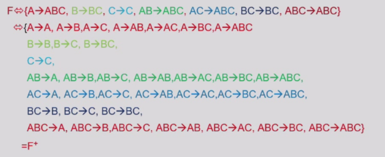

Chapter7 Relational Database Design
7.1 Decomposition
Basic Concepts of Decomposition
Decomposition 分解：
对于存在信息冗余的schema，可以考虑将其分解，得到多个schema。
如果分解得到的schema通过自然连接可以还原为原本的schema，则称为无损分解（lossless decomposition），否则称为有损分解（lossy decomposition）。
Example
如上图所示，重新自然连接的schema并不能还原为原本的schema，反而增加了干扰信息，因此为有损分解。
Normalization Theory 范式理论：
范式理论用于确定一个relation $R$ 是否为一种好的形式（good form）。
如果$R$并不为一种好的形式，则将其分解为$R_1,R_2,...,R_n$，满足：
- $R_1,R_2,...,R_n$均为好的形式
- 无损分解
Note
好的形式是人为定义的相对概念。
Functional Dependency
Function Dependency 函数依赖：
设一个schema的属性集合为$R$（本质上代表了整个schema），$\alpha$和$\beta$分别是$R$的子集，称$R$上存在函数依赖
$$\alpha\rightarrow\beta$$
当且仅当对于任何relation $r(R)$，其中的tuple只要$\alpha$中的属性值全部相同，则$\beta$中的属性值也一定全部相同，即$\alpha$唯一确定$\beta$。
一个满足所有函数依赖的relation为合法的relation；一个所有relation都合法的database为合法的database。
Note
仅从一个relation中不能判断函数依赖是否成立，需要结合$R$对应的所有relation。
可以用函数依赖对键进行定义。
- $K$是schema $R$的超键 $\Leftrightarrow$ $K\rightarrow R$
- $K$是schema $R$的候选键 $\Leftrightarrow$ $K\rightarrow R$ 且不存在$K$的真子集$\alpha$使得$\alpha\rightarrow R$
Trivial Functional Dependency 平凡函数依赖：
若属性集合$\alpha$和$\beta$满足$\beta\subseteq\alpha$，则称$\alpha\rightarrow\beta$这一函数依赖是平凡的。
Closure of a Set of Functional Dependencies 函数依赖集合的闭包：
设$F$为函数依赖组成的集合，$F$中的函数依赖可以推导出其他函数依赖，所有推导出的函数依赖组成的集合称为$F$的闭包，记作$F^+$。
$F$是$F^+$的子集，$F^+$是$F$的超集。
已知$F$求$F^+$需要使用Armstrong's Axiom：
- 自反（reflexivity）：若$\beta\subseteq\alpha$，则$\alpha\rightarrow\beta$
- 增补（augmentation）：若$\alpha\rightarrow\beta$，则$\gamma\alpha\rightarrow\gamma\beta$
- 传递（transitivity）：若$\alpha\rightarrow\beta$且$\beta\rightarrow\gamma$，则$\alpha\rightarrow\gamma$
通过这三条公理还可以推导出以下规则：
- 合并（union）：若$\alpha\rightarrow\beta$且$\alpha\rightarrow\gamma$，则$\alpha\rightarrow\beta\gamma$
- 分解（decomposition）：若$\alpha\rightarrow\beta\gamma$，则$\alpha\rightarrow\beta$且$\alpha\rightarrow\gamma$
- 伪传递（pseudotransitivity）：若$\alpha\rightarrow\beta$且$\gamma\beta\rightarrow\delta$，则$\alpha\gamma\rightarrow\delta$
通过重复应用Armstrong's Axiom，可以从$F$开始推导出$F^+$。
Example
已知$R(\alpha,\beta,\gamma)$有函数依赖$\alpha\gamma\rightarrow\beta\gamma$，求证其与$\alpha\gamma\rightarrow\beta$等价。
左推右：自反：$\beta\gamma\rightarrow\beta$，再加上传递即可
右推左：两边增补$\gamma$即可
很重要的结论！
Closure of Attribute Sets 属性集合的闭包：
对于属性集合$\alpha$，定义其闭包为在函数依赖集合$F$下可由$\alpha$决定的所有属性集合，记作$\alpha^+$。
result := alpha;
while (changes to result) do
for each beta->gamma in F do
begin
if beta in result then result := result union gamma;
end
Example
设$R={A,B,C,G,H,I}$，$F={A\rightarrow B,A\rightarrow C,CG\rightarrow H,CG\rightarrow I,B\rightarrow H}$，求$(AG)^+$。
result = $AG$ result = $ABCG$ ($A\rightarrow C$ and $A\rightarrow B$) result = $ABCGH$ ($CG\rightarrow H$ and $CG\subseteq ABCG$) result = $ABCGHI$ ($CG\rightarrow I$ and $CG\rightarrow AGBCH$)
属性的闭包有以下几个作用：
- 检查一个属性集合$\alpha$是否为超键：计算$\alpha^+$，若$\alpha^+$包含$R$的所有属性，则$\alpha$是$R$的超键
- 检查是否存在函数依赖$\alpha\rightarrow\beta$：若$\beta\subseteq\alpha^+$，则存在函数依赖$\alpha\rightarrow\beta$
- 计算$F$的闭包$F^+$：对于$R$的任意一个非空子集$\gamma$（$2^n-1$个，$n$为$R$的属性个数），都可以算出其闭包$\gamma^+$；对于$\gamma^+$的任意一个非空子集$S$，都能得到函数依赖$\gamma\rightarrow S$。所有函数依赖组成的集合即为$F^+$。
Example
已知$R(A,B,C)$，$F={A\rightarrow B,B\rightarrow C}$，求$F^+$。
$A^+=ABC$ $B^+=BC$ $C^+=C$ $(AB)^+=ABC$ $(AC)^+=ABC$ $(BC)^+=BC$ $(ABC)^+=ABC$

Note
这是机器的算法，人没必要做这种无聊的事！
Extraneous Attribute 无关属性：
在函数依赖集合$F$中，若对于某个函数依赖，移走其中某个属性并不影响$F^+$，则称这个函数依赖中该属性是无关属性。
考虑函数依赖$\alpha\rightarrow\beta$的左侧：
若$A\in\alpha$且去掉$\alpha\rightarrow\beta$的$F$可以推出$(\alpha-A)\rightarrow\beta$，则$A$是无关属性。
($F$ logically implies $F'=(F-{\alpha\rightarrow\beta})\cup{(\alpha-A)\rightarrow\beta}$)
令$\gamma=\alpha-{A}$，若$\gamma^+$包含$\beta$，则$A$是无关属性。
考虑函数依赖$\alpha\rightarrow\beta$的右侧：
若$A\in\beta$且将$\alpha\rightarrow\beta$替换成$\alpha\rightarrow(\beta-A)$的$F$可以推出$\alpha\rightarrow\beta$，则$A$是无关属性。
($F'=(F-{\alpha\rightarrow\beta})\cup{\alpha\rightarrow(\beta-A)}$ logically implies $F$)
在$F'$下，若$\alpha^+$包含$A$，则$A$是无关属性。
Canonical Cover 正则覆盖：
函数依赖集合$F$的正则覆盖是一个函数依赖集合$F_c$，满足：
- $F$可以推导出$F_c$的所有函数依赖
- $F_c$可以推导出$F$的所有函数依赖
- $F_c$的所有函数依赖都没有无关属性
- $F_c$的所有函数依赖的左侧都是唯一的
简单点说，$F_c$就是对$F$进行化简，但仍然保持闭包不变。所以说，要分解$R$时，考虑$F_c$会更加方便。
由$F$计算$F_c$需要重复以下步骤：
- 将所有形如$\alpha_1\rightarrow\beta_1$和$\alpha_1\rightarrow\beta_2$合并成$\alpha_1\rightarrow\beta_1\beta_2$
- 检查每一个函数依赖，去掉无关属性
Note
注意检查无关属性时的依据是当前的$F$而不是最初的$F$。
Example
已知$R={A,B,C}$，$F={A\rightarrow BC,B\rightarrow C,A\rightarrow B,AB\rightarrow C}$，求$F_c$。
先将$A\rightarrow BC$和$A\rightarrow B$合并成$A\rightarrow BC$，得到新的集合$F={A\rightarrow BC,B\rightarrow C,AB\rightarrow C}$。
在$AB\rightarrow C$中，$A$是无关属性，因为$B\rightarrow C$本身就在集合中。合并后得到新的集合$F={A\rightarrow BC,B\rightarrow C}$。
在$A\rightarrow BC$中，$C$是无关属性，证明同理。
综上，$F_c={A\rightarrow B,B\rightarrow C}$。
Note
这是机器的算法，人跟着感觉走！
Example
对于$R(A,B,C,D,E)$，$F={A\rightarrow BC,AD\rightarrow E,B\rightarrow C,D\rightarrow E}$，求：
- $F_c$
- $(AE)^+$
- $R$的所有候选键
$F_c={A\rightarrow B,B\rightarrow C,D\rightarrow E}$
$(AE)^+=ABCE$
$AD$
无损分解的充分条件：
设schema $R$分解为$R_1$和$R_2$（同样表示属性集合），则在只考虑函数依赖的情况下，无损分解的充分条件为：
$$R_1\cap R_2\rightarrow R_1$$
或
$$R_1\cap R_2\rightarrow R_2$$
Example
$R={A,B,C},~F={A\rightarrow B,B\rightarrow C}$
第一种无损分解：$R_1={A,B},~R_2={B,C}$ 原因：$R_1\cap R_2={B}$且$B\rightarrow BC$
第二种无损分解：$R_1={A,B},~R_2={A,C}$ 原因：$R_1\cap R_2={C}$且$A\rightarrow AB$
Note
$B\rightarrow BC$是$B\rightarrow{B,C}$的简写。
Normal Forms
Boyce-Codd Normal Form（BCNF）：
设schema $R$有一个函数依赖集合$F$，$F^+$是$F$的闭包，$R$为BCNF当且仅当$F^+$中的每一个函数依赖$\alpha\rightarrow\beta$满足以下条件之一：
- $\alpha\rightarrow\beta$是平凡函数依赖（$\beta\subseteq\alpha$）
- $\alpha$是$R$的超键
更简单的说法：$F^+$的任何一个非平凡函数依赖$\alpha\rightarrow\beta$中的$\alpha$都是$R$的超键。
BCNF分解算法：
在当前分解结果中，如果有某个$R_i$，其存在非平凡的函数依赖$\alpha\rightarrow\beta$，且$\alpha$不是$R_i$的超键，则$R_i$分解为$R_i-\beta$和$(\alpha,\beta)$。
能保证分解成BCNF且无损分解，但不一定能依赖保持。
Note
分解不一定唯一。
Example
已知$R(A,B,C,D)$，$F={A\rightarrow B,B\rightarrow CD}$，求$R$的BCNF分解。
超键为$A$，$AB$，$AC$，$AD$，$ABC$，$ABD$，$ACD$，$ABCD$，候选键为$A$。
$R$不是BCNF，原因是$B\rightarrow CD$，$B$不是超键。
分解成$R_1=(BCD)$和$R_2=(AB)$，分别有$F_1={B\rightarrow CD}$和$F_2={A\rightarrow B}$，都是BCNF。
Dependency Preservation 依赖保持：
设schema $R$有一个函数依赖集合$F$，$R$分解成$R_1,R_2,...,R_n$，若$F$中的任意一个函数依赖都可以在某个$R_i$中保留（验证），而不需要进行连接，则称该分解为依赖保持的。
符号化的定义：
设schema $R$分解为$R_1,R_2,...,R_n$，$F$为$R$的函数依赖集合，$F_i$是$F^+$中只涉及到$R_i$中属性的函数依赖集合，若：
$$(F_1\cup F_2\cup...\cup F_n)^+=F^+$$
则该分解是依赖保持的。
Example
$R=(A,B,C)$，$F={A\rightarrow B,B\rightarrow C}$，可以发现$R$不是BCNF。
第一种分解：$R_1=(A,B)$，$R_2=(B,C)$，$F_1={A\rightarrow B}$，$F2={B\rightarrow C}$ 依赖保持。
第二种分解：$R_1=(A,B)$，$R_2=(A,C)$，$F_1={A\rightarrow B}$，$F2={A\rightarrow C}$ 非依赖保持。
Third Normal Form（3NF）：
设schema $R$有一个函数依赖集合$F$，$F^+$是$F$的闭包，$R$为3NF当且仅当$F^+$中的每一个函数依赖$\alpha\rightarrow\beta$满足以下条件之一：
- $\alpha\rightarrow\beta$是平凡函数依赖（$\beta\subseteq\alpha$）
- $\alpha$是$R$的超键
- $\beta-\alpha$中的每一个属性$A$都属于$R$的某个候选键（不同的$A$可能属于不同候选键）
由此可以推出，BCNF一定是3NF，3NF是BCNF的妥协。
3NF分解算法：
首先对$F$化简，化简为$F_c$；
$F_c$中的每个函数依赖$\alpha\rightarrow\beta$，都分解出一个$R_i=\alpha\beta$；
若没有一个$R_i$包含候选键，则挑选某个候选键再变成一个$R_i$。
可以同时满足3NF，无损分解和依赖保持。
Functional Dependency Theory
Dependency Preservation 依赖保持：
法一：
法二：
对于函数依赖$\alpha\rightarrow\beta$：
$\textbf{result}=\alpha$ repeat for each $R_i$ in the decomposition $t=(\text{result}\cap R_i)^+\cap R_i$ $\text{result}=\text{result}\cup t$ until result does not change
若result包含$\beta$中的所有属性，则该函数依赖是依赖保持的。
若$F$中所有的函数依赖都符合上述情况，则该分解是依赖保持的。